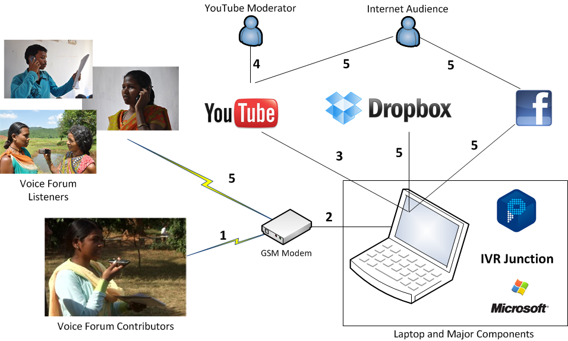

Basic on Navigational search
Faceted Classification : is an analytic-synthetic classification scheme. It classifies objects using multiple taxonomies that express their different attributes or facets rather than classifying using a single taxonomy.
IVR junction: Idea & it's working
IVR Junction is a new system that combines other free and commercial tools into an integrated platform for building scalable voice forums. IVR Junction uses existing cloud-based services to provide free online content moderation, free hosting of audio recordings for dissemination to a global audience, and a novel mechanism to automatically synchronize audio recordings across geographically-dispersed offices, thereby enabling local access points with decreased calling costs. It simplifies the creation of voice forums, by leveraging a Windows-based installer for each client machine and familiar Internet services for hosting and moderation.
How IVR Junction works1) User calls to voice forum to record

2) modem connects user to voice forum coded using voiceXML
3) IVR Junction code converts the audio file into a video and uploads the video corresponding to recorded message on the configured YouTube
4) YouTube moderator sign-in on the YouTube channel to see if there are new recordings which awaits his approval.And selcet or reject
5) If moderator approves some further actions taken like posting on social networking sites.
Video Kheti
VideoKheti, a mobile system using speech, graphics, and touch interaction for low-literate farmers in rural India. VideoKheti helps farmers to find and watch agricultural extension videos in their own language.
VIDEOKHETI: DESIGN AND DEVELOPMENT
1) Navigation tree:here are a total of 147 videos available in VideoKheti, classified by farming experts according to the features of their content. These features were organized in four levels: crop, crop cycle, type of action, and type of method. We built a topdown navigation tree based on these four levels
GUI description:
The interface of VideoKheti is completely text-free.
it has three parts:
1) header panel, which is present on every screen
2) icons showing the choices available at that stage of the navigation
3) and breadcrumbs showing what has been selected so far and the position in the hierarchy.
The header panel includes three buttons. The back button, on
the left, allows the user to go back to the previous screen.
The middle button allows the user to play the system prompts
for the current screen. Finally, the button on the right is the
speech input button.
Speech recognition
VideoKheti therefore uses the SALAAM method to recognize
the Hindi dialect of the rural villages we were working
with. SALAAM allows small-vocabulary recognition by using
the acoustic model of any existing ASR and performing
cross-language phoneme mapping between the language of
the ASR and the target language (Hindi, in our case). It is
fully automatic and requires a very small amount of training
data. The limitation of this approach is that it can only be
used efficiently with vocabulary of 100 word types or less,
where a word type refers to a single word or phrase.
DISCUSSION
Both with and without speech input, we saw similar outcomes
when farmers tried to use our system. One major finding
was the impact of education: whether or not participants
had speech input available, farmers with very little education
had trouble using VideoKheti. The difficulties encountered
by low-literate users included problems with understanding
and remembering scenarios
Use a spacebar or arrow keys to navigate